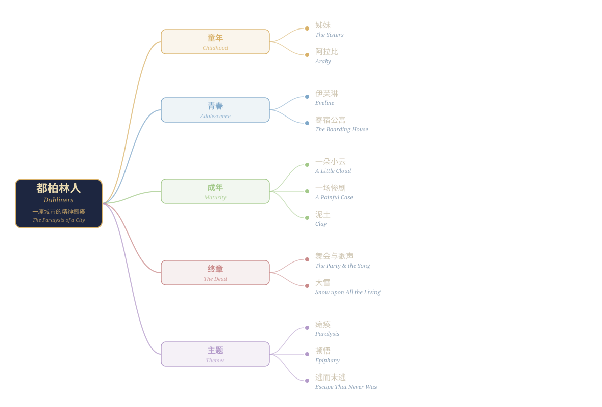

都柏林人
〇 · 书籍信息
基本信息
| 书名 | 《都柏林人》（Dubliners）——十五个短篇按「童年→青春→成年→公共生活」排列，最后以《死者》收束 |
|---|---|
| 作者 | 詹姆斯·乔伊斯（1882–1941），爱尔兰作家。二十二岁起自我放逐欧洲大陆，从此再未久居都柏林——他写故乡的方式是把故乡钉在纸上 |
| 出版 | 1905 年交稿，出版商以「不道德」为由拖了近十年、印版一度被毁；1914 年才面世——出版史本身就是一部瘫痪史 |
| 体裁 | 短篇小说集（linked story cycle）。乔伊斯自称要写「我祖国的道德史的一个章节」——每篇以一个「顿悟」（epiphany）收尾 |
| 一句话 | 十五个都柏林人都在某个瞬间看清了自己的生活，然后无一例外地转身继续过原来的日子——瘫痪不是不能动，是看得清清楚楚却不动。 |
一 · 核心主题总览
十五篇被四个年龄段串成一部城市病理报告：① 瘫痪（paralysis，全书总诊断）
「瘫痪」是《姊妹》开篇第一个生词，也是全书的总病名：身体的瘫痪、意志的瘫痪、国家的瘫痪。乔伊斯给朋友的信里说，他要以「四方面的瘫痪」给都柏林画像——童年、青春、成年、公共生活。
② 顿悟（epiphany）
每篇结尾都有一个瞬间：人物忽然看清自己的处境——阿拉比的黑暗里、伊芙琳的栏杆前、加布里埃尔的雪中。看清，然后不动：这就是乔伊斯的残酷。顿悟不是救赎，是判决。
③ 逃而未逃（escape）
伊芙琳要逃去布宜诺斯艾利斯、弗兰克·钱德勒要逃进音乐、加布里埃尔要逃出爱尔兰的记忆——全部失败。乔伊斯笔下没有走成的人；他自己走了，于是替全城的人留下来。
④ 死者与生者
终篇《死者》把前十四篇的全部主题熔进一场舞会与一场雪：生者被死者占有，活人被过去覆盖——雪落在我们所有人身上。
二 · 第一部 童年三篇—— 姊妹 · 阿拉比 ——
姊妹
开篇第一句「这一次他没救了」，第一段落下全书总诊断的三个生词：paralysis（瘫痪）、gnomon（日晷的缺角）、simony（买卖圣职）——三个词各对应一种瘫痪。神父弗林瘫痪中风而死，少年叙述者在灵堂与梦魇之间穿行；神父生前打碎圣杯的传言、临死时的痴笑，让「宗教的体面」一寸寸剥落。童年篇的顿悟是：大人世界的神圣外壳，裂给一个孩子看。
◆ 语言学习 · 姊妹
| paralysis /pəˈræləsɪs/ | n. 瘫痪 —— 例句：It had always sounded strangely in my ears（开篇）。复数 paralyses；metaphorical paralysis 全书题眼 |
|---|---|
| gnomon /ˈnəʊmɒn/ | n. 日晷的指针 —— 例句：like the word gnomon in the Euclid（开篇）。几何词——「缺失的角」暗指故事里缺席的人 |
| simony /ˈsaɪməni/ | n. 买卖圣职 —— 例句：the word simony in the Catechism（开篇）。宗教史词——信仰被当生意 |
| chalice /ˈtʃælɪs/ | n. 圣杯 —— 例句：he had broken the chalice（传闻段）。打碎圣杯=神父崩溃的物证 |
句型 ｜ 「Every night as I gazed up at the window I said softly to myself the word paralysis.」——gazed up at（凝视）+ said softly to myself（对自己轻声说）：两个动作就把孩子的恐惧写完。「对自己念词」是乔伊斯发明的「顿悟前摇」。
阿拉比
少年暗恋邻居的曼根姐姐，许诺去「阿拉比」集市为她带回礼物。等待的一周里，日常突然失去色彩；周六晚他攥着一枚先令、迟到地抵达几乎收摊的集市，只买到一件毫无意义的小东西。灯灭之前的黑暗里，他看见自己——「一个被虚荣心驱使、嘲弄的造物」，眼睛灼烧着痛苦与愤怒。英文短篇史上最著名的结尾之一：顿悟由「熄灯」完成。
◆ 语言学习 · 阿拉比
| vanity /ˈvænəti/ | n. 虚荣，徒劳 —— 例句：driven and derided by vanity（结尾）。vanity fair「名利场」同源；圣经传道书语感 |
|---|---|
| deride /dɪˈraɪd/ | v. 嘲弄 —— 例句：driven and derided by vanity（结尾）。derision 名词；driven and derided 头韵对偶 |
| anguish /ˈæŋɡwɪʃ/ | n. 极度痛苦 —— 例句：my eyes burned with anguish and anger（结尾）。与 pain 辨析：anguish 更深更内 |
| bazaar /bəˈzɑː/ | n. 集市，义卖市场 —— 例句：Araby, the bazaar（全篇目的地）。中东借词——异域感即欲望感 |
句型 ｜ 「But my body was like a harp and her words and gestures were like fingers running upon the wires.」——两个 like 的对偶明喻把暗恋写成一架乐器。情窦初开的经典修辞：身体=乐器，对方=手；仿写任何「被拨动」的体验皆可用。
三 · 第二部 青春四篇—— 伊芙琳 · 寄宿公寓 ——
伊芙琳
伊芙琳十九岁，坐在窗前决定要不要跟水手弗兰克私奔去布宜诺斯艾利斯。她在街口与老熟人做白工、供家用、忍受父亲的手——「逃！她必须逃！」可是登上码头的瞬间，她抓住铁栏杆不动了：弗兰克在喊，她像一只没知觉的动物一样望着他，脸上没有任何爱与告别。全篇最著名的「不动」：顿悟发生后，人选择了瘫痪。
◆ 语言学习 · 伊芙琳
| invade /ɪnˈveɪd/ | v. 侵入 —— 例句：watching the evening invade the avenue（开篇）。evening 做主语——乔伊斯让时间成为动词的执行者 |
|---|---|
| cretonne /ˈkretɒn/ | n. 印花棉布 —— 例句：the odour of dusty cretonne（开篇）。室内布料专名——气味即记忆的锚 |
| haven /ˈheɪvn/ | n. 避风港 —— 例句：a new home in a distant unknown country（幻想段）。harbor 同义；safe haven 高频 |
| bleak /bliːk/ | adj. 荒凉阴冷的 —— 例句：the bleak streets（回忆段）。bleak outlook「前景黯淡」高频 |
句型 ｜ 「Escape! She must escape! But why?」——两次感叹后紧跟一个三词问句。乔伊斯的「自我质疑插入法」：让决心在最热的时候被一句冷问浇透——立论文的自我反问就用这个节奏。
寄宿公寓
穆尼太太经营寄宿公寓，女儿波莉与房客杜飞先生「有了事」。母亲不怒反喜——她要的就是这件事：一连串精心安排的谈话之后，杜飞被逼到「要么娶她要么走人」，他选了娶。婚姻的开始与公寓的经营共用同一套算术。青春篇的顿悟：感情在算术面前，只是待盘点的存货。
◆ 语言学习 · 公寓
| lodging /ˈlɒdʒɪŋ/ | n. 寄宿 —— 例句：the Hill? no, the lodging house（背景）。lodging house 寄宿公寓；lodger 房客（与卡夫卡册同一个词） |
|---|---|
| compromise /ˈkɒmprəmaɪz/ | v./n. 妥协，私了 —— 例句：a compromised girl（母女的算计段）。名词「折中方案」动词「让步」都高频 |
| flirt /flɜːt/ | v. 调情 —— 例句：flirting with the men（波莉段）。flirtation 名词；flirty 形容词 |
| avail /əˈveɪl/ | n. 用处 —— 例句：to no avail（杜飞的挣扎段）。of little avail；乔伊斯的「无用」从不说 useless |
习语 ｜ to no avail 毫无用处——比 in vain 更正式，公文与文学通用。杜飞的婚礼是「to no avail」的具象化：挣扎了三页，结果早已写好。
四 · 第三部 成年与公共生活—— 小云 · 惨剧 · 泥土 ——
一朵小云
小职员小钱德勒与旅居伦敦发财的旧友加拉赫重逢酒馆；回家后他向妻子提议「去伦敦也不迟」，妻子抱起孩子呵斥，孩子大哭——他坐在灯下，自嘲「像囚徒一样」，泪里带着对才华尽毁的确认。「一朵小云」指加拉赫——他乡的云飘过，照出故乡的瘴气。
◆ 语言学习 · 小云
| revision /rɪˈvɪʒn/ | n. 复审 —— 例句：the revision of verse（他改诗段）。revise 动词；大学写作高频 |
|---|---|
| melancholy /ˈmelənkəli/ | adj. 忧郁的 —— 例句：a melancholy mood（结尾）。与《奥兰多》册同一词——两座城市的忧郁互相注脚 |
| prison /ˈprɪzn/ | n. 监狱 —— 例句：like a prisoner（结尾自况）。囚徒意象是「逃而未逃」系列的句号 |
| grudge /ɡrʌdʒ/ | n. 怨恨 —— 例句：bearing a grudge（对旧友的酸楚段）。bear/hold a grudge against sb 高频 |
句型 ｜ 「He was a prisoner for life and he was punished for nothing except that he had been born in Dublin.」——破折号? no，and 并列两个短句，第二句 punished for nothing except… 是「荒谬归因」结构。把存在性的苦，归罪到一件具体小事（出生地）上——反讽直接拉满。
一场惨剧 & 泥土
《一场惨剧》：达菲先生——「住在离自己身体一小段距离处」的男人——拒绝辛尼科太太的爱，多年后从报纸读到她卧轨自尽，他唯一的反应是删掉日记里与她有关的记忆。《泥土》：洗衣妇玛丽亚在万圣夜摸碟占卜，摸到的偏偏是象征「修女生涯」的泥土——她一生所有微小的善意，换来一场无人记得的孤独。两篇互为镜像：一个拒绝爱，一个没被爱过。
◆ 语言学习 · 惨剧与泥土
| solitary /ˈsɒlɪtəri/ | adj. 独居的 —— 例句：a solitary man（达菲开场）。solitude 名词；「Mr Duffy lived a short distance from his body」的全篇前注 |
|---|---|
| commute /kəˈmjuːt/ | v. 通勤；减刑 —— 例句：his daily commute（达菲生活段）。一词两义：通勤与减刑——两义都写满了他的生活 |
| provision /prəˈvɪʒn/ | n. 供给 —— 例句：provision shops（玛丽亚购物段）。provisions 口粮；make provision for「未雨绸缪」 |
| clairvoyance /ˌkleəˈvɔɪəns/ | n. 透视，占卜 —— 例句：the Hallow eve games（占卜段）。clair-（清亮）+ voir（看）——「看得见看不见的未来」 |
习语 ｜ a short distance from his body——「他住在离自己身体一小段距离的地方」：英文写「魂不守舍」的最高级句法。把身心分离写成距离，从此成为英语心理书写的标准件。
五 · 第四部 死者—— 舞会 · 歌声 · 大雪 ——
死者
姨妈家的年度舞会，加布里埃尔·康罗伊致辞、切鹅、跳舞；妻子格蕾塔听完客人唱的〈奥格里姆姑娘〉后立在楼梯口出神。旅馆房间，她说出少年迈克尔·富里——那个为她淋雨唱歌、十七岁死去的男孩。加布里埃尔的自尊接连碎裂，在窗前看完一场覆盖全爱尔兰的雪：雪落在中部平原的暗处、落在光秃的原野、落进孤坟——纷纷地、缓缓地落下，像他们最后的终结，落在所有的生者与死者身上。这一段雪，后来被称为英语小说最伟大的结尾。
◆ 语言学习 · 死者
| generously /ˈdʒenərəsli/ | adv. 宽厚地 —— 例句：cut the goose generously（切鹅段）。generous 家族——好客的仪式感 |
|---|---|
| shamefaced /ˈʃeɪmfeɪst/ | adj. 羞愧的 —— 例句：shamefaced recollection（自省段）。face 作动词后缀构词：shamefaced / dogged? 举 shame-faced 拼写即「羞到脸上」 |
| swoon /swuːn/ | v. 昏厥，恍惚 —— 例句：His soul swooned slowly（雪中段）。sw- 词头自带轻盈感；swoon over sb「为某人倾倒」今义 |
| utter /ˈʌtə/ | v. 发出（声）—— 例句：his own identity…? 全篇最后的发声。utterance 名词——与卡夫卡《判决》册同一个词族 |
句型 ｜ 「His soul swooned slowly as he heard the snow falling faintly through the universe and faintly falling, like the descent of their last end, upon all the living and the dead.」——swooned slowly / falling faintly / faintly falling 三组头韵与回环（A-B-B-A）模拟雪的飘转。声音先于意义抵达——这是朗读本段时必须慢读的原因。
六 · 人物图鉴与成长弧线—— 主角配角 · 一张表看穿 ——
主要人物
叙述者·少年（《姊妹》《阿拉比》）——童年篇的眼睛：乔伊斯的第一人称少年叙事教科书——只见所视、不评所见，让读者自己完成裁决。
伊芙琳 Eveline——十九岁、窗前、行李袋：全书最著名的「不动的人」。她的瘫痪不是懦弱一个词能盖住——是账目（付出与亏欠）算到最后一步的冻结。
小钱德勒 Ignatius Gallaher 对面的那位——小职员、诗人梦、囚徒感：「一朵小云」是他自己——他乡的成功者只是照出他处境的镜子。
达菲先生 Mr Duffy——「住在离自己身体一小段距离处」：秩序与孤独的活标本；他拒绝爱的方式是把爱从日记里删掉。
加布里埃尔 Gabriel Conroy——《死者》主角：致辞人、切鹅人、被雪审判的人。乔伊斯的半自传化身——他在雪中的清算，是全书十五篇顿悟的总清算。
次要人物（功能位）
| 弗林神父 | 瘫痪死去的神父：打碎的圣杯与痴笑——神圣职业的崩塌现场 |
|---|---|
| 弗兰克 Frank | 伊芙琳的恋人：「有点陌生人的样子」——被爱的理由与被怀疑的理由是同一个 |
| 穆尼太太 | 寄宿公寓的经营者：把婚姻当业务办的母亲——青春篇的算术化身 |
| 玛丽亚 Maria | 洗衣妇、万圣夜、泥土：全书最温柔也最残忍的一篇的主角 |
| 迈克尔·富里 Michael Furey | 死去的少年歌者：他不曾出场，却是《死者》真正的判决者 |
七 · 主题与象征—— 每个道具都在说话 ——
| 瘫痪 ↔ 全书总病名 | 身体的、意志的、城市的、国家的四层瘫痪——开篇的医学词被乔伊斯升格为国族诊断 |
|---|---|
| 熄灯 ↔ 顿悟的开关 | 阿拉比的灯一盏盏灭掉：黑暗不是遮蔽，是显影——看得清的时刻总在光消失之后 |
| 铁栏杆 ↔ 不动的边界 | 伊芙琳抓住的栏杆：安全与牢笼是同一件东西，取决于你面向哪边 |
| 日记 ↔ 记忆的编辑部 | 达菲删掉与她有关的一切：拒绝记录，等于拒绝被改变 |
| 泥土 ↔ 命定的占卜 | 万圣夜摸碟的泥土（death 另一物是圣杯）——命运的预言从不吓人，它只是提醒 |
| 大雪 ↔ 生者与死者的合葬 | 落满爱尔兰的雪：把所有未完成的告别一次覆盖 |
八 · 写作手法赏析—— 怎么写，就能怎么学 ——
① 视角纪律
每篇一个视角、一次入境，绝不越界。严格限权让短篇获得长篇的纵深——学短篇先学「不越权」。
② 顿悟收尾
结尾一瞬完成裁决，不解释、不延续。把「判决权」交给读者：乔伊斯的结尾全部停在「看清」的同一毫秒。
③ 城市地名写实
街道、酒馆、电车全部真实可查——虚构的故事踩在真实的地图上，重量加倍。
④ 音乐与歌声的叙事功能
《死者》的歌、多首小调：歌声是记忆的开关——用一支歌换出一段往事，省下十页铺垫。
九 · 名段欣赏—— 原文精读 · 逐段赏析 ——
十 · 金句摘录—— 14 条 · 中英对照 · 带出处 ——
"There was no hope for him this time."这一次，他没救了。—— 姊妹 · 开篇
"Every night as I gazed up at the window I said softly to myself the word paralysis."每天夜里我望着那扇窗，对自己轻声念出「瘫痪」这个词。—— 姊妹
"It had always sounded strangely in my ears, like the word gnomon in the Euclid and the word simony in the Catechism."这个词在我听来总是很怪，像欧几里得书里的「日晷」、教义问答里的「买卖圣职」。—— 姊妹
"North Richmond Street, being blind, was a quiet street."北里士满街是一条死巷，静得出奇。—— 阿拉比 · 开篇
"But my body was like a harp and her words and gestures were like fingers running upon the wires."我的身体像一架竖琴，她的话语和手势像手指在琴弦上滑过。—— 阿拉比
"Gazing up into the darkness I saw myself as a creature driven and derided by vanity."望着黑暗，我看见自己是一个被虚荣心驱使、嘲弄的造物。—— 阿拉比 · 结尾
"She sat at the window watching the evening invade the avenue."她坐在窗前，看着暮色侵入街道。—— 伊芙琳 · 开篇
"Escape! She must escape!"逃！她必须逃！—— 伊芙琳
"Mr Duffy lived a short distance from his body."达菲先生住在离自己身体一小段距离的地方。—— 一场惨剧
"One by one, they were all becoming shades."一个接一个，他们全都变成了幽影。—— 死者
"The time had come for him to set out on his journey westward."动身西行的时刻到了。—— 死者
"Snow was general all over Ireland."大雪落遍全爱尔兰。—— 死者 · 结尾
"His soul swooned slowly as he heard the snow falling faintly through the universe."灵魂缓缓地恍惚起来，他听着雪穿过宇宙纷纷落下。—— 死者 · 结尾
"…like the descent of their last end, upon all the living and the dead."……像他们最后的终结，落在所有的生者与死者身上。—— 死者 · 结尾
十一 · 拓展阅读—— 原文 · 词条 · 译文 ——
作者与文本
- Dubliners · 英文维基百科 —— 十五篇清单、出版受阻史与「顿悟」词条
- James Joyce · 英文维基百科 —— 生平与都柏林地图
- 《都柏林人》· 中文维基百科 —— 译本与评介
核心篇目
- The Dead (short story) · 英文维基百科 —— 终篇专条：电影改编与雪段研究
- Araby · 英文维基百科 —— 顿悟教学的第一篇
延伸阅读
- Epiphany (literature) · 英文维基百科 —— 乔伊斯发明的文学术语
- 豆瓣 · 各中译本检索 —— 对照不同译本
十二 · 个人感悟与心得—— 三点心得 ——
读《都柏林人》：三点心得
其一，看得清清楚楚却不动，才是真正的瘫痪。伊芙琳在码头把所有理由想了一遍，然后抓住栏杆。日常里的「瘫痪时刻」同理：决定不会因为「想清楚了」自动发生，它的唯一形态是动作。可落地的自查：最近一个月，有没有一件你想清楚了却没动手的事？给它一个日历上的具体时刻——没排进日历的决定，等于没有决定。
其二，把「逃」换成「换」。十五个人都想逃，全部失败——因为逃的对象是「现在的生活」，而生活的最小单元（房间、岗位、习惯）没换。真正可执行的是「换」：换一个具体变量——换一条通勤路线、换一个工位、换一种每天第一件做的事。小变量撬动大惯性，比「逃离计划」可靠得多。
其三，别做「住在身体一小段距离外」的人。达菲先生的秩序感把所有风险与温度一起拒之门外，最后连自省也只是删日记。反面的功课是：给情绪与关系留账本——记录本身就是参与。动作：每周写三行「本周真实的情绪事件」，不评判，只记录；半年后回看，你会发现自己是否也住得离自己太远。
一句话收束：乔伊斯替一座城市写完了病历，病历的第一行写着「看得清」，最后一行写着「不动」。读它的目的只有一个：轮到自己时，动。
十三 · 一页速查（复习用）
| 全书框架 | 十五篇四阶段：童年（姊妹/一次遭遇/阿拉比）→ 青春（伊芙琳/赛车之后/两个风流哥儿/寄宿公寓）→ 成年（一朵小云/对应/泥土/一场惨剧/常春藤日/一位母亲/神恩）→ 死者 |
|---|---|
| 总诊断 | paralysis：身体 / 意志 / 城市 / 国家 四层瘫痪 |
| 著名结尾 | 阿拉比（熄灯顿悟）/ 一场惨剧（离身体一小段）/ 死者（大雪） |
| 顿悟词群 | epiphany 顿悟 / gnomon 缺角 / simony 买卖圣职 / vanity 虚荣 / swoon 恍惚 |
| 词汇 TOP12 | paralysis / gnomon / simony / chalice / vanity / deride / anguish / bazaar / invade / cretonne / bleak / solitary |
| 逃而未逃 | 伊芙琳的栏杆 / 小钱德勒的灯 / 加布里埃尔的雪 |
| 出版史 | 1905 交稿 → 印版被毁 → 1914 面世：一部瘫痪史的出版 |
| 对照阅读 | 《尤利西斯》（同一座城市的放大）/ 《一个青年艺术家的画像》（自传版） |
十四 · 全书思维导图—— 一图纵览 ——

一图纵览全书骨架 · 中英双语对照 · 手机端可左右滑动查看全图